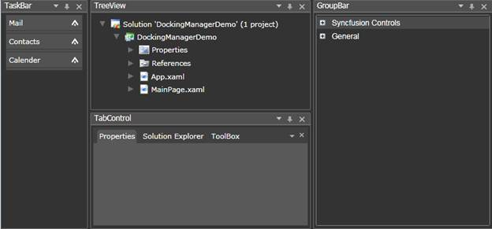
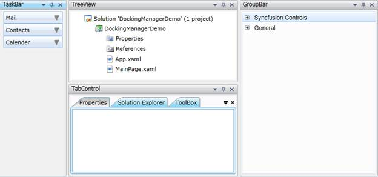
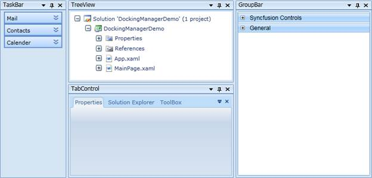
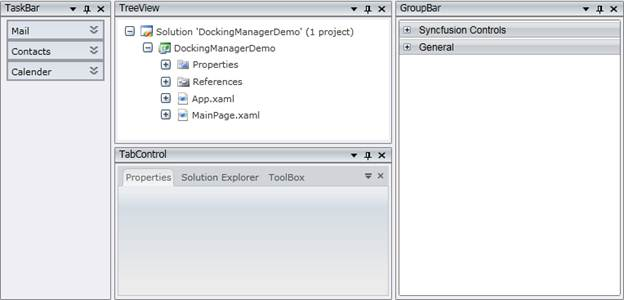
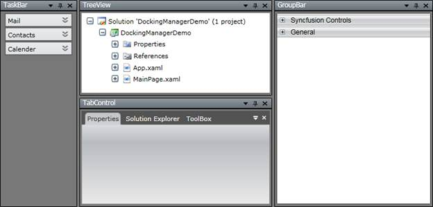
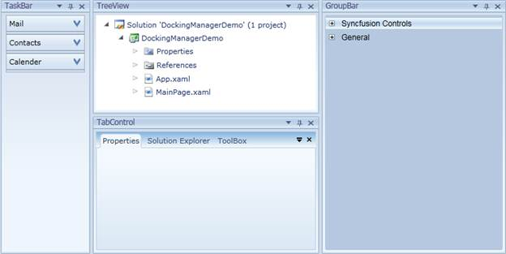
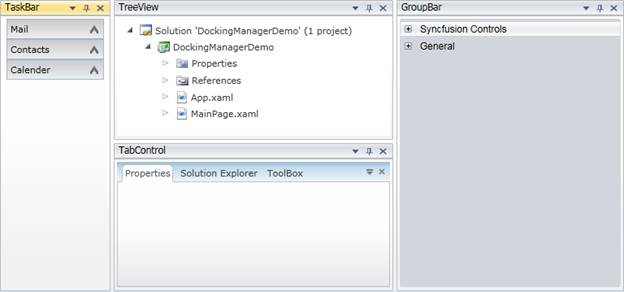
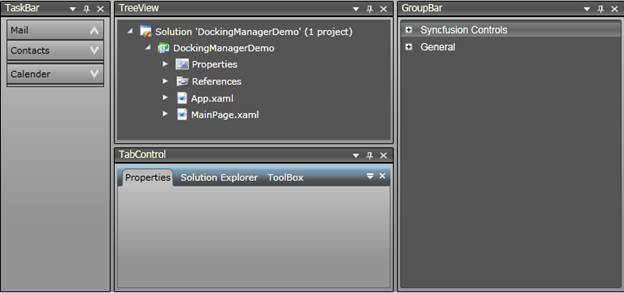

Visual styles are available for the dockable windows This gives the windows a rich and professional look and feel. The visual style for the DockingManager is set using the VisualStyle property. The following are some of the visual styles that can be applied to the DockingManager.
|
Property |
Description |
|
VisualStyle |
Sets the visual style for the DockingManager. The options provided are as follows: · Office2007Black · Office2007Silver · Office2007Blue · Blend · Default · Windows7 · Office2010Blue · Office2010Black · Office2010Silver · VS2010 · Metro |
Given below are the sample screenshots:
Figure 108: Default

Figure 109: Blend

Figure 110: Windows7

Figure 111: Office2007Blue

Figure 112: Office2007Silver

Figure 113: Office2007Black

Figure 114: Office2010Blue

Figure 115: Office2010Silver

Figure 116: Office2010Black